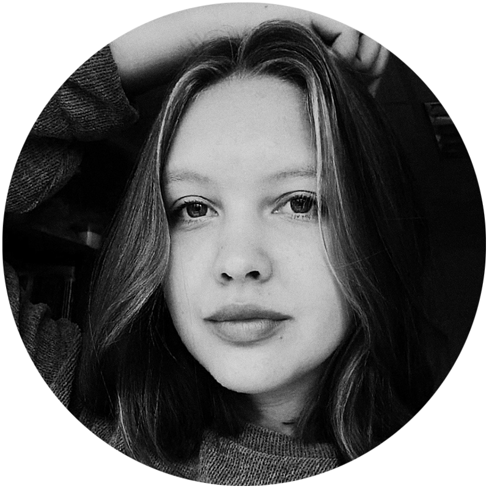
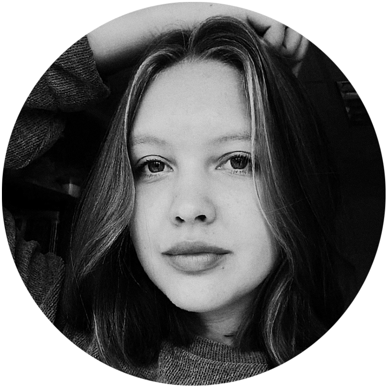

ИВАНОВСКИЙ
ГОСУДАРСТВЕННЫЙ
УНИВЕРСИТЕТ
2021 STUDENЬ
ЯНА ШИХАНОВА / 30.10.2021
КАРАНТИН:
#
ПЕРЕЖИТЬ
ОЧЕРЕДНОЙ
 


В 2021 ГОДУ
Каждый из нас уже испытал на себе отсутствие возможности встреч с
друзьями, ограничение перемещений, постоянное ношение средств
индивидуальной защиты, перевод на дистанционное обучение и прочее.
«Потеря привычных социальных связей чревата
проблемами, и чем дольше длится изоляция, тем
хуже могут быть последствия: долгосрочные
проблемы с психическим здоровьем, включая
стресс, бессонницу, эмоциональное истощение и
злоупотребление психоактивными веществами».
Как Вы относитесь к ограничениям, связанным с
пандемией?
Опрошенные были разных возрастов и сфер деятельности.
Большинству, как и ожидалось, данная ситуация порядком надоела,
и они хотели бы, чтобы это всё закончилось. Но положительно
настроенных также оказалось немало. Люди понимают причины
ограничений и соблюдают их.
Следующим шагом я выяснила, чувствуют
ли люди воздействие ограничений на
себе. Подавляющее большинство
ответило, что чувствуют: как
эмоционально, так и физически. Да, в
такое время человек страдает, ведь перед
ним неожиданно поставили непростые
условия, к которым он непривык.
1. 10% – Еще не понял
2. 20% – Положительно
3. 30% – Нейтрально
4. 40% – Отрицательно
Как снизить психологическое давление,
помочь себе и окружающим?
Чем люди развлекают себя, оказавшись в
ограниченных условиях?
1 – Просмотр фильмов
2 – Время с близкими
3 – Новые хобби, занятия
4 – Саморазвитие
5 – Прогулка
Также я хочу предложить свои варианты
занятий на карантине
1. Прогулки на свежем воздухе. Мы сидим в закрытом пространстве,
ведём сидячий образ жизни, что негативно влияет на наше здоровье.
Поэтому обязательно каждый день нужно выбираться на улицу.
2. Начать усиленно заниматься спортом. Какие-то упражнения дома,
какие-то – на улице. Это не только приблизит Вас к идеальным
цифрам на весах, но и снимет напряжение от прошедшего дня.
3. Начать заниматься делом, к которому Вы долго
не могли подступиться. Да-да, сейчас самое время
для этого, ведь у Вас полно свободного времени.
Если вышеперечисленный список поднадоел и захотелось чего-
то новенького, предлагаю включить в него такие занятия, как:
4. Освойте что-то новое. Это может быть что угодно: изучение
нового языка, игра на музыкальном инструменте, онлайн-курсы
психологии – поройтесь в своей голове, душе и дерзайте!
Хочется верить, что пандемия скоро закончится, и мы вернёмся к нашей
обычной жизни. А пока запаситесь терпением и займитесь тем, на что у
Вас не хватало времени. Каждый день создавайте себе хорошее
настроение, набирайтесь сил и берегите здоровье!
4. Саморазвитие. Когда, если не сейчас,
заняться саморазвитием? Вы проведете своё
время с пользой и расширите свой кругозор.
5. Начать заниматься йогой. Это не только Вас
успокоит морально, но и наведёт порядок в
вашем физическом состоянии и здоровье.
6. Уделите время родным и близким.
Появилось достаточно много времени,
поэтому самое время наладить контакты
с семьёй и раскрасить серые будни!
1. Стать звездой интернета. Будь это TikToK, YouTube или другие
подобные платформы, где Вы можете ярко заявить о себе. Выберете
интересующую Вас тематику и дерзайте – пишите, публикуйте! Кто
знает, может Ваш контент зайдёт, и Вы станете звездой.
2. Устройте себе день отдыха. Вообще
ничего не делайте в этот день, уделите
время только себе. Подольше поспите,
примите горячую ванну с бомбочками,
сделайте себе массаж и посмотрите
фильм с любимыми вкусняшками.
3. Прокачайте свои кулинарные навыки.
Если Вы не умеете готовить или не было
возможности обучиться новому, то
сейчас самое время. Откройте для себя
новые рецепты блюд разных стран, а
также мир вкусов и изысков.
Специалисты подтверждают, что пандемия
отрицательно повляла на психику людей, они
стали более раздражительными, тревожными
и усталыми. Причины того – неожиданное
разрушение привычного уклада жизни и
потеря социальных контактов.
Нужно попытаться меньше накручивать себя по этому поводу.
Человек, оказавшийся в ограниченном пространстве, так или
иначе думает о ситуации критично и писимистично. Сам себя
накручивая психилогически он в последствии чувствует себя
хуже и подавленней.
Следует найти себе развлечения в свободное
от учёбы и работы время. Это необходимо
прежде всего для того, чтобы не перенагружать
себя, свой мозг и провести время с пользой.
Поэтому я решила устроить опрос граждан и оставить строковое
поле для открытого и развёрнутого ответа. Подведя итоги, я
выяснила, что многие ответы похожи друг на друга поэтому я
обобщила и составила диаграмму по самым популярным ответам.
Так пишут исследователи и это неоспоримо. Легче с каждым
карантином и ужесточением ограничений не становится, что
показывает проведенный через социальные сети опрос
1
2
ЯНА ШИХАНОВА
/ 30.10.2021
ИЗОБРАЖЕНИЯ:
ИВАНОВСКИЙ
ГОСУДАРСТВЕННЫЙ
УНИВЕРСИТЕТ
2021 STUDENЬ